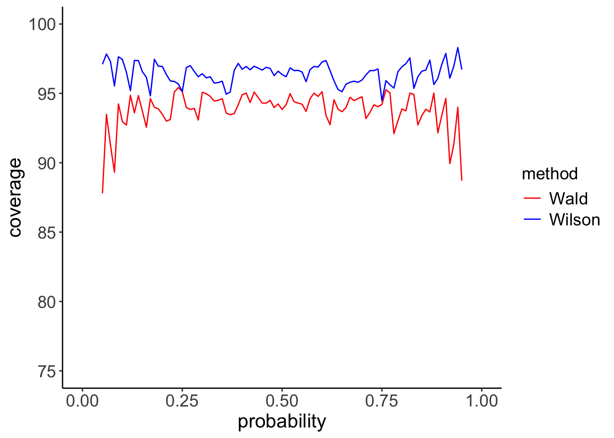

Usually confidence intervals for the estimation of proportions are based on methods that exploit the normal approximation to the binomial distribution. By simulation, two of these methods (Wilson and Wald) are tested for their ability to provide the stated coverage for small-to-large samples.
Author
Angelo Maria Sabatini
Published
April 27, 2024
Consider a Bernoulli test with \(n\) independent trials and \(x\) successes that are recorded in the test. The proportion \(f=x/n\) is assumed to be the estimate of the true probability \(p\); we want to determine the values \(p_1\) and \(p_2\) of the confidence interval (CI) with the required confidence level associated to \(f\), namely \(CL=100(1-\alpha)\%\).
The Clopper-Pearson equations can be used to calculate the CI:
where \(CL=1-c_1-c_2\). One common choice for \(c_1\) and \(c_2\) is the symmetric interval, \(c_1=c_2=(1-CL)/2\). For instance, when \(CL=95\%\), \(\alpha=0.05\) and \(c_1=c_2=2.5\%\). The Clopper-Pearson interval is also called the exact interval, since the solution of Equation 1 with respect to \(p_1\) and \(p_2\) gives the correct probability estimate, even for small samples.
It is noted that the binomial model has been used in Equation 1 to capture events of the type “number of successes out of a given number of independent trials”, namely:
\[
\text{Pr}(k\;\text{successes out of}\;n\;\text{trials})={n\choose k}p^k(1-p)^{n-k}
\]
where \(0\leq k\leq n\) and \({n\choose k}\) is the number of combinations of \(k\)-length sequences from an \(n\)-length sequence (I discussed this in a previous post of mine).
We recall that a binomial random variable \(X\) with parameters \(n\) (the number of independent trials) and \(p\) (the probability of success) has mean value and standard deviation:
The normal approximation to the binomial distribution, as stated by the De Moivre-Laplace theorem, is considered as an alternative to Equation 1 for CI construction. This theorem states that the random variable
\[
T=\frac{F-p}{\sigma_F}
\]
is approximately normally distributed - in practice, good approximations are achieved for \(np,n(1-p)\gg1\).
Given a variate \(t\) of \(T\), the CI can be written as follows:
where \(t_{1-\alpha/2}\) is the quantile of the normal distribution at specified probability \(1-\alpha/2\): for \(\alpha=0.05\), \(t_{1-\alpha/2}=1.96\).
It is noted that the Wilson interval is not centered on the measured proportion \(f\) but on the value \((f+t_{1-\alpha/2}^2/2n)/(t_{1-\alpha/2}^2/n+1)\), which is a function of \(f\) and the number of trials \(n\). This is due to the asymmetry of the binomial distribution for small \(n\).
Continuity correction
The accuracy of Equation 3 can be improved by applying the continuity correction to the proportion \(f=x/n\). This correction improves the accuracy of CI construction for discrete variables when they can be approximated by normal variables:
The Wilson interval (with continuity correction) is generally considered valid for \(n>10\). For \(n\gg1\) (namely, \(n>30\)), a very popular approximate formulation of the CI is the Wald interval:
The Wald interval, which does not require any continuity correction, is symmetric around the estimated proportion. For \(n\gg1\) it is noted indeed that the Wilson interval tends to become symmetric and identical to the Wald interval.
The question is when \(n\) is large enough for these methods to produce accurate inference. The R code below is a fully reproducible code to generate coverage plots for the Wilson interval (with continuity correction) and the Wald interval.
Code
set.seed(1789)n <-30# number of Bernoulli trialsL <-1000# number of simulated sequences a <-95# confidence levelt <-qnorm((1+a/100)/2) # quantile of the normal distributionp <-seq(0.05, 0.95, by =0.01) # tested values of probabilitynp <-length(p) # number of tested values of probabilityc_wald <-numeric(np) # Wald approachc_wilson <-numeric(np) # Wilson approachfor(i in1:np) {for(j in1:L) { x <-rbinom(1, size = n, prob = p[i]) # number of successes f <- x/n # proportion of successes fl <-max(0, (x-0.5)/n) # continuity correction fu <-min(1, (x+0.5)/n) CIl <- (fl+t^2/(2*n))/(1+t^2/n) - t*sqrt(fl*(1-fl)/n + t^2/(4*n^2))/(1+t^2/n) CIu <- (fu+t^2/(2*n))/(1+t^2/n) + t*sqrt(fu*(1-fu)/n + t^2/(4*n^2))/(1+t^2/n) CI_lower_wilson <-max(0.0, CIl) # Wilson interval CI_upper_wilson <-min(1.0, CIu) CI_lower_wald <- f - t*sqrt(f*(1-f)/n) # Wald interval CI_upper_wald <- f + t*sqrt(f*(1-f)/n)if(CI_lower_wilson <= p[i] && CI_upper_wilson >= p[i]) c_wilson[i] = c_wilson[i] +1if(CI_lower_wald <= p[i] && CI_upper_wald >= p[i]) c_wald[i] = c_wald[i] +1 }}c_wilson <-100*c_wilson/L # estimated coveragec_wald <-100*c_wald/L
Figure 1: Coverage curves for the binomial distribution with \(n=30\).
The simulation results of Figure 1 (\(n=30\)) show that, whereas the Wilson method tends just to provide some limited over-coverage for all values of \(p\) (this is simply due to \(x\) being present in both the sums of Equation 1), the Wald interval performs poorly, with severe under-coverage, especially for low and high values of \(p\). These results seem to raise objections against the use of the Wald interval, even in situations when \(n\gg1\): Figure 2 shows the coverage plots in the case of \(n=100\).

Figure 2: Coverage curves for the binomial distribution with \(n=100\).
Although the performance of the Wald method has slightly improved, the Wilson method still outperforms it, especially for small and high values of \(p\).
To conclude, when estimating the confidence interval associated to the estimate of proportions, the Wald interval - the most basic confidence interval usually considered by experimentalists - appears to be seriously flawed, also for values of the number of trials that are considered large in most statistical textbooks. The Wilson interval with continuity correction tends to perform much better and its use should be encouraged.